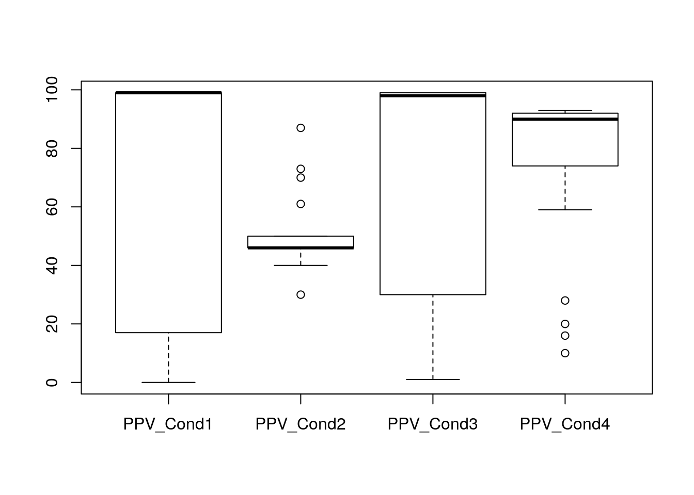
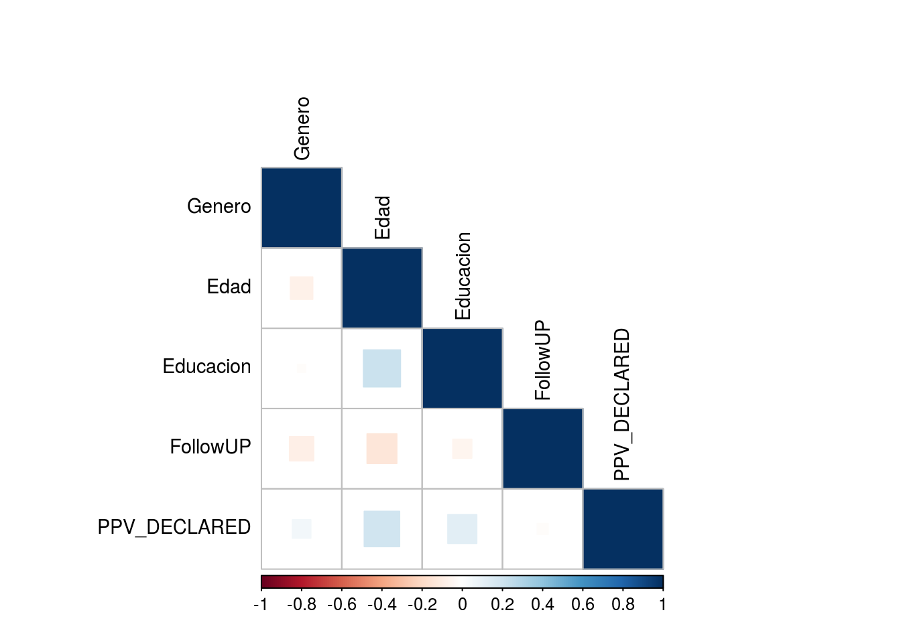

Chapter 9 A tibble: 29 x 2
ID mean9.1 Visualize missing values
With Amelia
if (!require('pacman')) install.packages('pacman'); library('pacman')
p_load(Amelia)
datos = datos %>% mutate(Sexo = ifelse(Edad == 37, NA, Sexo))
missmap(datos)## Warning in if (class(obj) == "amelia") {: the condition has length > 1 and
## only the first element will be used## Warning: Unknown or uninitialised column: 'arguments'.
## Warning: Unknown or uninitialised column: 'arguments'.## Warning: Unknown or uninitialised column: 'imputations'.
With ggplot and reshape2
# With ggplot
# A function that plots missingness
if (!require('pacman')) install.packages('pacman'); library('pacman')
p_load(reshape2, ggplot2)
ggplot_missing <- function(x){
x %>%
is.na %>%
melt %>%
ggplot(data = .,
aes(x = Var2,
y = Var1)) +
geom_raster(aes(fill = value)) +
scale_fill_grey(name = "",
labels = c("Present","Missing")) +
theme_minimal() +
theme(axis.text.x = element_text(angle=45, vjust=0.5)) +
labs(x = "Variables in Dataset",
y = "Rows / observations")
}
ggplot_missing(datos)
9.2 Tutorial externo
9.3 Findviews
Lanzar el siguiente comando para explorar visualmente los datos:
´findviews(datos)´
Ver pagina en Github